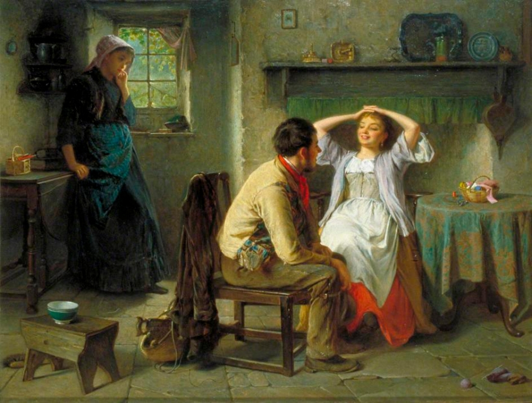

Ciúme Retroativo: Por que algumas pessoas têm ciúmes do passado romântico de seus parceiros?
Pontos chave
- O ciúme retroativo é uma resposta irracional;
- Em geral, revela uma insegurança emocional do(a) parceiro(a);
- O ciúme é uma manifestação inconsciente de posse e propriedade;
- A autorreflexão pode ser fundamental para melhorar esse comportamento.
Recentemente, enquanto assistia à série "Love is Blind" na Netflix, me deparei com um intrigante diálogo entre um casal que estava se conhecendo...
Em questão de minutos, uma das pessoas começou a fazer uma série de perguntas sobre o passado de seu pretendente. O que começou com perguntas aparentemente simples logo se transformou em uma verdadeira inquisição... Esse homem estava sofrendo de algo que poucos conhecem: a "Síndrome de Rebeca", também chamada de "ciúmes retroativo".
"O ciúme retroativo, ocasionalmente referido como TOC de ciúme retroativo, é uma forma distinta de ciúme intenso e irracional que um indivíduo sente em relação às experiências românticas e sexuais passadas de seu parceiro", diz Jourdan Travers...
Ao contrário do ciúme convencional, que envolve preocupações com as ações atuais do parceiro, o ciúme retroativo surge apenas a partir das experiências passadas...
1. O Outro como Propriedade
... estamos, na realidade, expressando a crença de que não apenas possuímos o parceiro no presente, mas também detemos direitos sobre toda a sua história passada...
2. A "Coisa" Usada não é mais desejada
... Em sua mente estreita, perversa e infantil, qualquer coisa usada perde o valor, e, portanto, amores passados são considerados uma violação de seus direitos.
3. O Papel da Rejeição
... Essa sensibilidade intensa pode levar a uma interpretação equivocada de ações ou palavras inocentes como indícios de rejeição...
Conclusão
Não há dúvidas de que o ciúme retroativo pode causar danos significativos a um relacionamento atual...
- Examinar Suas Emoções – O autoconhecimento é fundamental...
- Resistir à Tentação de Vasculhar o Passado – ...pratique o autocontrole de forma proativa.
- Compreender que Não Possuímos o Outro – ... é essencial para evitar a objetificação do outro.
- Reconhecer e Comunicar-se Abertamente – ... pode melhorar a conexão entre vocês.
#ciumes #ciumeretroativo #relacionamento #psicologia #traição #casal #terapiadecasal #emoção